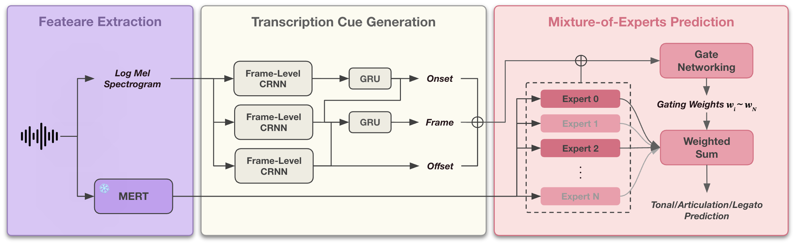

Abstract
Automatic detection of violin playing techniques is central to computational performance analysis, yet most systems first segment audio into notes and then classify each note — a cascade whose onset/offset errors propagate downstream. VioTech detects violin playing techniques directly at the frame level (10 ms / frame), removing the note pre-segmentation stage entirely. It predicts three technique dimensions in parallel — tonal technique (none / pizzicato / harmonics), articulation (none / spiccato), and legato (bow-change vs. sustained, framed as a binary regression problem). The proposed model couples an HRPT transcription backbone (providing onset/offset/frame cues) with a frozen MERT-v1-330M acoustic backbone, on top of which N multi-scale temporal experts (default N = 8, receptive fields 20 ms–2560 ms) are routed by per-task gating. On a cross-dataset (RWC) test set, the Mixture-of-Experts routing yields large gains on the expressive, less frequent classes (pizzicato, harmonics, spiccato), reaching a macro accuracy of 86.5%.
Highlights
Frame-level & cascade-free
Technique labels are predicted every 10 ms with no note onset/offset segmentation stage, avoiding cascading errors.
Multi-Scale Mixture-of-Experts
8 temporal experts over a frozen MERT-v1-330M backbone, each with its own MERT layer weights and receptive field (20 ms–2560 ms).
Per-task gating
Independent dense soft routing for tonal, articulation, and legato — revealing which time scales matter for each technique.
Legato as regression
The first computational model of legato bow-change timing, via a Gaussian-peak binary regression target.
VioTech120 dataset
120 manually annotated violin solo etudes (Paganini Op.1, Wohlfahrt Op.35, Kayser Op.20) with a dedicated annotation interface.
Transcription cues help
Jointly fine-tuned onset/offset/frame cues from the HRPT backbone measurably improve technique detection.
Method
Each 10-second audio segment is encoded by two backbones in parallel. The HRPT transcription backbone supplies onset/offset/frame cues and is jointly fine-tuned during technique training. The frozen MERT-v1-330M acoustic backbone exposes all its hidden layers to a bank of temporal experts.

Each expert computes a learnable weighted sum over MERT's hidden layers, projects 1024→128, then applies a depth-separable Conv1D (kernel = 2, 4, 8, …, 256 → receptive field 20 ms–2560 ms), a bidirectional GRU, and an MLP. Per-task gates route the experts independently for each technique dimension.
Results
Per-class accuracy on the RWC cross-dataset test set. Columns: Tonal none/pizz/harm (TN/TP/TH), Articulation none/spiccato (AN/AS), Legato sustained/bow-change (LS/LB).
| Model | TN | TP | TH | AN | AS | LS | LB | Macro |
|---|---|---|---|---|---|---|---|---|
| VioTech (Ours) | 79.07 | 89.60 | 88.84 | 97.78 | 97.16 | 96.49 | 56.73 | 86.52 |
| w/o MoE | 85.98 | 40.85 | 69.62 | 94.43 | 61.41 | 98.72 | 68.96 | 74.28 |
| w/o Layer Weight | 86.11 | 93.68 | 65.44 | 98.74 | 83.66 | 97.00 | 57.65 | 83.18 |
| w/o Transcription Cue | 79.83 | 95.28 | 83.28 | 99.57 | 64.51 | 97.00 | 64.21 | 83.38 |
The MoE routing yields large gains on the expressive, less frequent classes (pizzicato, harmonics, spiccato), especially under cross-dataset transfer.
Per-class accuracy
Task-level metrics
Expert routing — which time scales each task prefers
Global gate weights (%) over the 8 temporal experts (M0 = 20 ms … M7 = 2560 ms). Legato relies on mid-to-long scales, tonal on short-to-mid scales — a direct, interpretable readout of the model.
VioTech120 Dataset
VioTech120 comprises 120 manually annotated violin solo etudes (Paganini Op.1, Wohlfahrt Op.35, Kayser Op.20). Each note carries technique labels (tonal / articulation / legato) plus violin position and fingering, produced with a purpose-built piano-roll web tool synchronized to the audio.
The annotation interface is open-sourced: tklovln/audio-midi-marker.
Citation
If you find this work useful, please cite:
@inproceedings{wang2026viotech,
title = {VioTech: Frame-Level Violin Playing Technique Detection
with Multi-Scale Mixture-of-Experts},
author = {Wang, Ting-Kang and Cheung, Vincent K. M.
and Lai, Nan-Tien and Su, Li},
booktitle = {Proceedings of the 27th International Society for
Music Information Retrieval Conference (ISMIR)},
year = {2026}
}